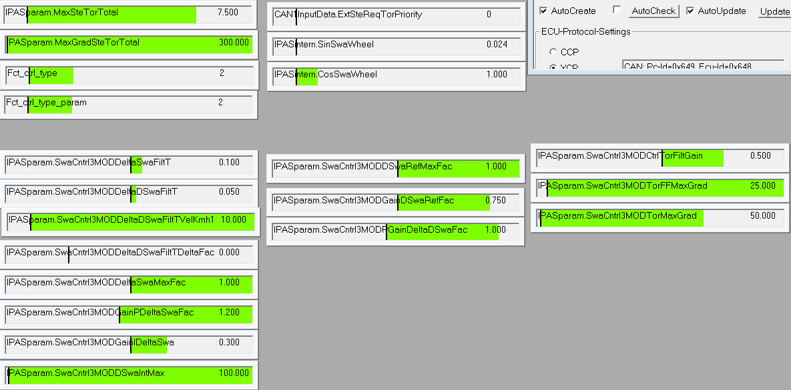

Mo 10.04.2017 07:15
Vergleich Parameter RTAS-Modul stwhlcntrl mit AD_Lateral_Controller_init_PassatB7_Parking:
Änderungen zum aktuellen Stand im Vergleich zu stwhlcntrl
Vorsteuerung
==========
IPASparam_SwaCntrl3TestSwitchOn = boolean(0) => boolean(1); % [0/1] Manual Switch to use load estimation
IPASparam.SwaCntrl3MODForwardFactor = 0.50f; /* - FeedForwardGain-Factor */ Parameter in simulink nicht vorhanden
Regler
=====
IPASparam_Ctrl3MODMitDswaRef = boolean(1)=> boolean(0); % Wird Soll-Lenkwinkelgeschwindigkeit nach erster Kaskade hinzuaddiert?
IPASparam_SwaCntrl3MODPGainDeltaDSwaFac = single(0.84) => 1.0; % [-] Scaling-factor for P-gain second cascade (Dswa)
IPASparam_SwaCntrl3MODPGainDeltaDSwaLowDynDeltaFac = single(0.7) => 1.0; % [-] Scaling-factor for influence of SwaCntrlLowDynFac on P-gain second cascade (Dswa)
IPASparam_SwaCntrl3MODGainDSwaRefLowDynDeltaFac = single(0.56) => 0.8; % [-] Scaling-factor for IPASparam_SwaCntrl3MODGainDSwaRefVec
IPASparam_SwaCntrl3MODGainDSwaRefFac = single(0.28) => 0.2; % [-] Scaling-factor for influence of SwaCntrlLowDynFac on IPASparam_SwaCntrl3MODGainDSwaRefVec
I-Anteil auf erste Kaskade für v = < 15 km/h ist nicht berücksichtigt
Dieser Block ist wahrscheinlich nicht enthalten
=================================================================================================
/* Gradient FeedForward gradienten limitieren wegen Geräusche bei Parken */
if( (IPASintern.SwaRequest.Priority == IQF_PRIORITY_TP)
|| (IPASintern.SwaRequest.Priority == IQF_PRIORITY_GP)
|| (IPASintern.SwaRequest.Priority == IQF_PRIORITY_HAPS)
)
{
/*-------------------------------------------*/
/* max gradient */
/*-------------------------------------------*/
delta_swa_max = IPASintern.ForwardTorSwaReq - torque;
val1 = IPASparam.SwaCntrl3MODTorFFMaxGrad*IPASparam.LoopTime;
if( delta_swa_max > val1 ) IPASintern.ForwardTorSwaReq = torque + val1;
else if( delta_swa_max < -val1 ) IPASintern.ForwardTorSwaReq = torque - val1;
}
=================================================================================================
Do 10.11.2016 08:26
Problem VPU2 mit Einstellen des Sendens verschiedener Botschaften
Mit der alten Version (LIndau-Passat) wurde gestestet:

Testen der VPU2 übernacht mit Senden einer Fahrzeugmessung von Jonas über eine Stunde
Can1: VPU-CAN
CAN2: PT-CAN
CAN3: BCU3-CAN
Zum einen kamm es zum Absturz des BCU3-CAN nach 11368 s:

was dazu führte, das alle Botschaften auf CAN3 nicht mehr funktionieren und damit auch BCU3_TO_ICC auf CAN1 eingestellt wird.
Der eigentliche Fehler, das die Botschaften BAP_ACC, mAWV, mACC_GRA_Anzeige, mACC_System,ExtBrakeRequest1,IQF1, IQF2, IQF_MESS_ID623 auf CAN 1
sich nach 16863 s eingestellt haben. Die Messung lief weiter bis 50510 s
Es ist in der VPU noch ein Interrupt enthalten, der möglicherweise dafür verantwortlich ist. Der wird rausgenommen und erneut übernacht getestet

Di 06.09.2016 18:21

Do 07.01.2016 15:30
Liebe Kollegen,
bitte alle Stunden im Zusammenhang mit dem Volvo-SV-Projekt bitte ab sofort auf folgendes Projekt schreiben:
SURROUND VIEW VOLVO
DG-047085
D1-213657
Di 08.09.2015 16:42
Messung B 2: TestTrackFFMQuer01 -15 deg
Messung B 3: TestTrackFFMQuer02 -30 deg
Messung B 4: TestTrackFFMQuer03 +1.5 deg
Messung B 5: TestTrackFFMQuer04 -40 deg
Messung B 6: TestTrackFFMQuer05 +30 deg
Messung B 7: TestTrackFFMQuer06 +40 deg
Messung B 8: TestTrackFFMQuer07 +1.5 deg
Messung B 9: TestTrackFFMQuer08 +1. deg
Fr 10.07.2015 10:41
Versuche mit Bremregelung auf Mk100 anstatt Booster
Mit einem Schalter FctParam.UseMk100 = 0/1 habe ich eine Umschaltung auf die MK100 gemacht.
Die Regelung funktioniert prinzipiell, ist aber deutlich unkomfortabler und ungenauer, Booster regelt bei 2-4 bar auf 1-2 km/h
Mk100 regelt bei 8-10 bar auf
Mi 22.04.2015 08:00
von Dirk:
Hi,
habe es wie besprochen im Trunk implementiert. Der alte Zustand ist über das ini-File reaktivierbar:
;******************************************************************************
; SECTION M I S C E L L A N E O U S
;******************************************************************************
[misc]
pathInvalidInPause = 0 ;[0/1] send path invalid during PathFinder is in state "Pause"
Grüße, Dirk
Do 19.03.2015
Messung Querparkllücken mit VehiclePoseCorrected
150313_990_OffsetRight20kmh_20 Querpark Rechts vorwaerts, auf VA geregelt
150313_990_OffsetRight20kmh_22 Querpark Rechts vorwaerts, auf VA geregelt
150313_990_OffsetRight20kmh_23 Querpark Rechts vorwaerts, auf VA geregelt ein bisschen schraeg
150313_990_OffsetRight20kmh_24 Querpark Rechts vorwaerts, auf HA geregelt ein deutlich schraeg
150313_990_OffsetRight20kmh_25 Querpark Rechts vorwaerts, auf HA geregelt, gut, aber Linie lag schlecht, wahrscheinlich kaum korrektur
150313_990_OffsetRight20kmh_26 Querpark Rechts vorwaerts, auf HA geregelt, gut
150313_990_OffsetRight20kmh_34 Querpark Rechts vorwaerts HA-geregelt okay
150313_990_OffsetRight20kmh_36 Querpark Rechts rueckwaerts HA-geregelt versatz aber gerade
150313_990_OffsetRight20kmh_38 Querpark Rechts ruckwaerts HA-geregelt versatz etwas schief
150313_990_OffsetRight20kmh_39 Querpark Rechts ruckwaerts HA-geregelt gut reingekommen
150313_990_OffsetRight20kmh_40 Querpark Rechts ruckwaerts HA-geregelt gut reingekommen
Mo 09.02.2015 letzter Stand VPU4 in Lindau-Passat

aktueller Stand 990 VPU2

alphaSIsAct = 0.233833
alphaS = 0.249
yawEgo = -2.9
Do 29.01.2015
Messung 3 Kopfparklücke Rueckwaerts
Mi 17.12.351 11:30:47
LenkAnsteuerung_IQF_interrupt_3ms_1.asc Stand, Sprung in Vorgabe Canalyzer
LenkAnsteuerung_IQF_interrupt_3ms_2.asc Stand,
LenkAnsteuerung_IQF_interrupt_3ms_3.asc Kriechen
LenkAnsteuerung_IQF_interrupt_4ms_3.asc Rollen
LenkAnsteuerung_IQF_geaendert_3ms_1.asc Stand
LenkAnsteuerung_IQF_geaendert_3ms_2.asc Kriechen, Teilstueck
LenkAnsteuerung_IQF_geaendert_3ms_1.asc Kriechen
LenkAnsteuerung_IQF_geaendert_3ms_1.asc Rollen
keine Lampe an: Motor läuft, aus machen, Notaus drücken, wieder an machen, Motor gestartet
Di 16.12.350 15:31:31
Eisntellung:

Messung 1 Stand : LenkAnsteuerung_IQF_1.asc
Messung 2 kriechen : LenkAnsteuerung_IQF_2.asc
Messung 3 Rollen : LenkAnsteuerung_IQF_3.asc
Messung 4 >= 10 km/h : LenkAnsteuerung_IQF_4.asc stärkere Geräusche
Messung 5 >= 10 km/h : LenkAnsteuerung_IQF_5.asc default-Einstellung => stärkere Geräusche
Messung 6 >= 10 km/h : LenkAnsteuerung_IQF_5.asc default-Einstellung+IPASparam.SwaCntrl3MODCtrlTorFiltGain=0.5 weniger Geräusche
Rest default-Zustand, dann Geräusche beu 10 km/h besser
Do 11.12.345 08:34:57
D:\mess\canalyser\Contiguard_Passat_990\131017_Ffm_Stand_Dev2Pth\VorgabeStandMeas292_2.asc
bisher
D:\mess\canalyser\Contiguard_Passat_990\141126_EinParkVersuche\EinparkVersuche_2a.asc
Messungen:
Lenkwinkelvorbage_IQF1_inter_1ms_1.asc VPU2 build 373 Interuptgesteuert TZH-CAN-Modul mit 1ms
Lenkwinkelvorbage_IQF1_inter_1ms_2.asc
Lenkwinkelvorbage_IQF1_sofort_1ms_1.asc
Lenkwinkelvorbage_IQF1_inter_2ms_1.asc
Lenkwinkelvorbage_IQF1_sofort_2ms_1.asc
Lenkwinkelvorbage_Parken_intert_2ms_1.asc
Lenkwinkelvorbage_Parken_inter_2ms_bx.asc Fortlaufende Messung mit Interrupt Parken
Lenkwinkelvorbage_Parken_inter_2ms_b7.asc Am Ende wurde Parkvorgang abgebrochen ????
Do 11.12.345 15:57:38
Test mit aktueller Version:
Lenkwinkelvorbage_IQF1_2ms_a1.asc IPASparam.config_byte = 128+2 IPASparam.FFStaticTOffset=1.0 IPASparam.SwaCntrl3MODTorMaxGrad=75
Sprung in Vorgabe durch ascii-Messung, leichte Geräusche beim 1.0 Nm Sprung. Geräusch bei hoher Dynamik
Lenkwinkelvorbage_IQF1_2ms_a11.asc IPASparam.config_byte = 128+2 IPASparam.FFStaticTOffset=1.0 IPASparam.SwaCntrl3MODTorMaxGrad=75
kein Sprung in Vorgabe durch ascii-Messung, leichte Geräusche beim 1.0 Nm Sprung. Geräusch bei hoher Dynamik
Lenkwinkelvorbage_IQF1_2ms_a12.asc IPASparam.config_byte = 128+2 IPASparam.FFStaticTOffset=0.0 IPASparam.SwaCntrl3MODTorMaxGrad=75
Geräusch bei hoher Dynamik
Lenkwinkelvorbage_IQF1_2ms_a13.asc IPASparam.config_byte = 128+2 IPASparam.FFStaticTOffset=1.0 IPASparam.SwaCntrl3MODTorMaxGrad=50
Geräusche beim 1.0 Nm Sprung, Geräusch bei hoher Dynamik
Lenkwinkelvorbage_IQF1_2ms_a14.asc IPASparam.config_byte = 128+2 IPASparam.FFStaticTOffset=1.0 IPASparam.SwaCntrl3MODTorMaxGrad=25
leichte Geräusche beim 1.0 Nm Sprung, Geräusch bei hoher Dynamik
Lenkwinkelvorbage_IQF1_2ms_a15.asc IPASparam.config_byte = 128+2 IPASparam.FFStaticTOffset=0.5 IPASparam.SwaCntrl3MODTorMaxGrad=25
ganz leichte Geräusche beim 1.0 Nm Sprung, etwas Geräusch bei hoher Dynamik
Lenkwinkelvorbage_IQF1_2ms_a16.asc IPASparam.config_byte = 128+2 IPASparam.FFStaticTOffset=0.0 IPASparam.SwaCntrl3MODTorMaxGrad=25
etwas Geräusch bei hoher Dynamik
Lenkwinkelvorbage_IQF1_2ms_a17.asc aktuelle Version Interruptgesteuert
Lenkwinkelvorbage_IQF1_2ms_a18.asc aktuelle Version Sofortsenden gesteuert
Lenkwinkelvorbage_IQF1_2ms_a19.asc aktuelle Version Sofortsenden gesteuert j25 Nm/s auf Gesamt hat geschwungen
Lenkwinkelvorbage_IQF1_2ms_a20.asc aktuelle Version Sofortsenden gesteuert IPASparam.SwaCntrl3MODTorMaxGrad=25 Genauigkeit war okay